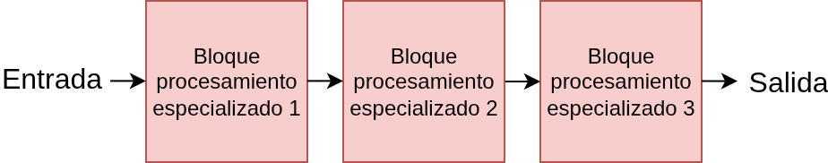
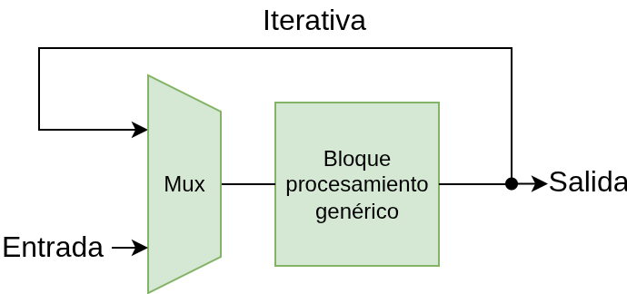
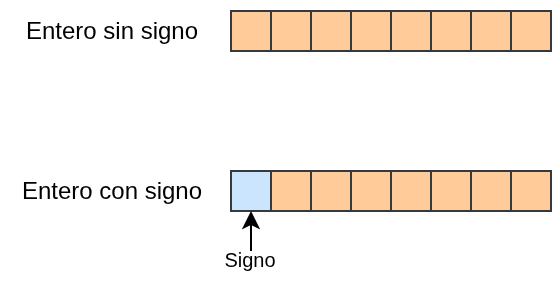
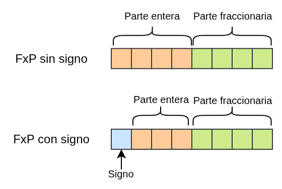
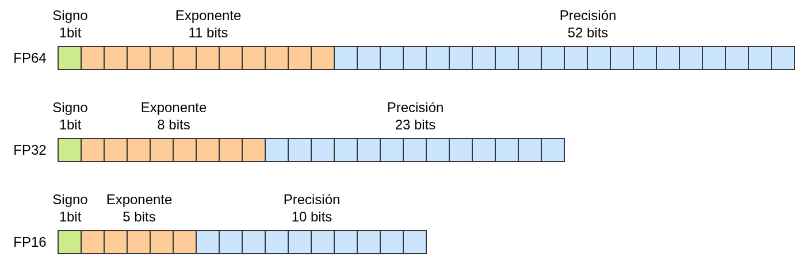
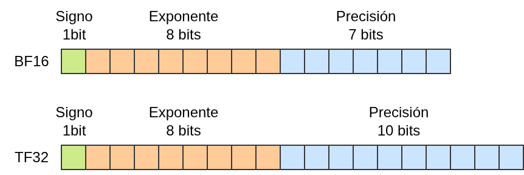
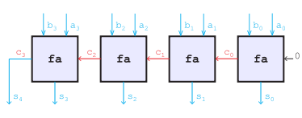
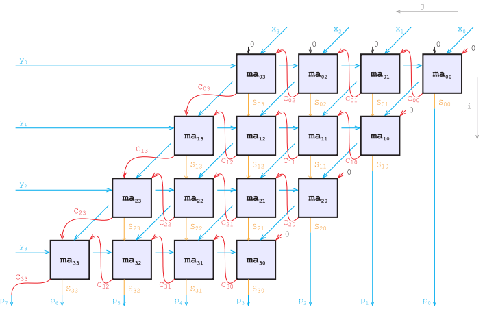
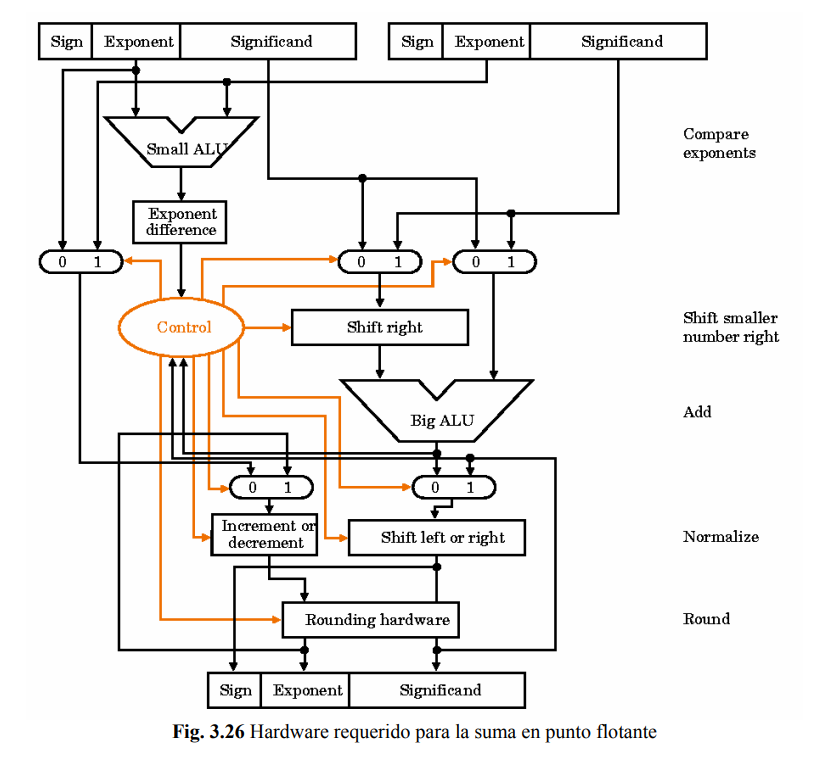
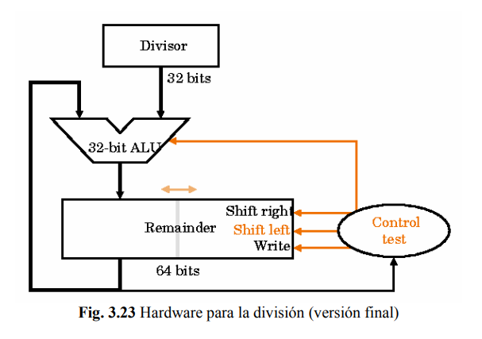

Introducción a sistemas embebidos para alumnos de CEIA
Los sistemas embebidos operan bajo restricciones que no existen en servidores o PCs:
Ejemplo: ejecutar una red neuronal en un microcontrolador con 256 KB de RAM y sin GPU.
En sistemas embebidos, además de que la aplicación funcione correctamente, se deben considerar métricas de complejidad temporal (tiempo de ejecución) y espacial (uso de memoria).
Cantidad de datos procesados por unidad de tiempo. Clave en aplicaciones de tiempo real como procesamiento de video.
Tiempo desde la entrada hasta la obtención de la salida. Crucial en aplicaciones como conducción autónoma.
Computacionales, de implementación y mantenimiento. Equilibrar rendimiento con recursos necesarios.
Consumo energético total y tasa de consumo. Importante en dispositivos móviles, embebidos y datacenters.
Si el sistema debe mantener un rendimiento de R inferencias/segundo y la potencia máxima es P (watt), la energía disponible por inferencia está acotada:
E < P / R
Ejemplo:
P = 1 W, R = 10 inf/s
→ E < 100 mJ por inferencia
Esto limita directamente la complejidad computacional de cada inferencia.
Las plataformas de hardware imponen restricciones que definen qué aplicaciones son viables:
Limita el tamaño del programa, datos y buffers. Distinguir entre memoria on-chip (rápida, escasa) y off-chip (abundante, lenta).
Velocidad de transferencia entre memoria externa y procesador. Puede ser cuello de botella aún con capacidad de memoria suficiente.
Velocidad de ejecución de operaciones. En plataformas con baja capacidad, el software debe optimizarse.
Modelo simplificado basado en: accesos a memoria interna, accesos a memoria externa, y cantidad/tipo de operaciones aritméticas.
Cada plataforma ofrece un compromiso distinto entre flexibilidad, rendimiento y eficiencia:
| Plataforma | Rendimiento | Latencia | Eficiencia | Ventajas / desventajas |
|---|---|---|---|---|
| CPU | Bajo | Alta | Baja | + Flexibilidad máxima · - Limitado paralelismo |
| GPU | Alto | Media | Media | + Paralelismo masivo · - Alto consumo energético |
| TPU | Muy alto | Baja | Alta | + Optimizado para tensores · - Acceso restringido |
| FPGA | Medio-Alto | Baja | Alta | + Reconfigurable, baja latencia · - Complejidad de diseño |
| ASIC | Muy alto | Muy baja | Muy alta | + Máxima eficiencia · - Sin flexibilidad, alto costo |
La tendencia es un enfoque híbrido: preprocesar en edge y consultar la nube cuando sea necesario.


⚡ Compensación: mayor paralelismo reduce tiempo, a expensas de recursos.
Representación eficiente para hardware de bajo consumo (FPGAs, ASICs, MCUs).
Entero sin signo:
Valor = Σ xi · 2i (rango: 0 a 2b−1)
Entero con signo (complemento a dos):
Valor = −xb−1·2b−1 + Σ xi·2i

Se fija la posición del punto binario con f bits fraccionarios:
Valor = (Σ xi · 2i) · 2−f
Nomenclatura:
Q<b>.<f> (con
signo)UQ<b>.<f> (sin signo)Ejemplos:
Q8.4: 8 bits totales, 4 fraccionarios, 3 enteros + 1
signo.UQ16.8: 16 bits sin signo, 8 fraccionarios y 8 enteros.
La diferencia entre un entero y FxP es solo la interpretación del valor binario. Ambos usan la misma codificación.
| Formato | b | f | Rango | Precisión |
|---|---|---|---|---|
UQ8 (entero) |
8 | 0 | 0 a 255 | 1 |
Q8 (entero) |
8 | 0 | −128 a 127 | 1 |
Q16.15 (FxP) |
16 | 15 | −1 a ≈1.0 | ≈3.05 × 10−5 |
Q16.8 (FxP) |
16 | 8 | −128 a ≈128 | ≈3.91 × 10−3 |
Q8.−2 (FxP) |
8 | −2 | −512 a 508 (múltiplos de 4) | 4 |
💡 Compromiso fundamental: a mayor precisión (mayor f), menor rango, y viceversa.
Las operaciones FxP se implementan usando operaciones enteras nativas (INT8,
INT16):
¡La única operación real en HW es la suma entera!
La multiplicación requiere un desplazamiento adicional en HW.
| Operación | Formato de A y B | Operación extra en hardware |
|---|---|---|
A + B |
Mismo | Ninguna (bits alineados implícitamente) |
A × B |
Mismo | Desplazamiento sobre el resultado |
A + B |
Distinto | Desplazamiento sobre un operando (alineamiento) |
A × B |
Distinto | Desplazamiento sobre el resultado |
Consideraciones clave:
Para valores con gran variabilidad, se usa una representación basada en mantisa y exponente:
Valor = (−1)s × (1 + mantisa) × 2(exponente − bias)
El "1" implícito se omite en el almacenamiento (bit oculto). El bias centra el rango del exponente.
Formatos estándar IEEE 754:
FP64: 64 bits (1 signo + 11 exp + 52 mantisa) — alta
precisión científica.FP32: 32 bits (1 + 8 + 23) — estándar en deep learning.
FP16: 16 bits (1 + 5 + 10) — aceleradores modernos, menor consumo.
El estándar IEEE 754 reserva combinaciones de bits para representar valores especiales:
| Valor | Exponente | Mantisa | Significado |
|---|---|---|---|
| ±0 | Todo ceros | Todo ceros | Cero con signo. +0 y −0 se comparan como iguales. |
| Subnormales | Todo ceros | ≠ 0 | Valores muy pequeños sin bit implícito (1 → 0). Llenan el hueco entre 0 y el menor normal. |
| ±∞ | Todo unos | Todo ceros | Resultado de overflow o división por cero. Propaga por operaciones. |
| NaN | Todo unos | ≠ 0 | Not a Number. Resultado de operaciones inválidas (0/0, √−1). NaN ≠ NaN. |
⚠️ Cada valor especial requiere lógica de detección y manejo dedicada en hardware, aumentando la complejidad del diseño respecto a FxP.
| Formato | Valor máximo | Precisión (normales) | Precisión (subnormales) |
|---|---|---|---|
FP16 |
≈ ±6.55 × 104 | ≈ 6.10 × 10−5 | ≈ 5.96 × 10−8 |
FP32 |
≈ ±3.40 × 1038 | ≈ 1.18 × 10−38 | ≈ 1.40 × 10−45 |
FP64 |
≈ ±1.80 × 10308 | ≈ 2.23 × 10−308 | ≈ 4.94 × 10−324 |
FP128 |
≈ ±1.19 × 104932 | ≈ 3.36 × 10−4932 | ≈ 6.48 × 10−4966 |
✓ Ventaja: enorme rango dinámico, evita desbordamientos.
✗ Desventaja: hardware más complejo, mayor consumo de energía y área.
16 bits: 1 signo + 8 exp + 7 mantisa.
Desarrollado por Google Brain para TPUs.
Comparte exponente con FP32 → conversión directa.
19 bits: 1 signo + 8 exp + 10 mantisa.
Introducido por NVIDIA (arquitectura Ampere).
Buen balance velocidad/precisión para entrenamiento.

| Formato | Rango | Precisión | Eficiencia | Uso | Plataformas |
|---|---|---|---|---|---|
FP64 |
Muy alto | Muy alta | Baja | Entrenamiento | CPUs, HPC |
FP32 |
Alto | Alta | Moderada | Entrenamiento | GPUs, TPUs |
FP16 |
Medio | Moderada | Alta | Entrenamiento | GPUs, TPUs, NPUs |
TF32 |
Alto | Moderada | Muy alta | Entrenamiento | GPUs (Ampere) |
BF16 |
Medio–Alto | Moderada | Alta | Entrenamiento | TPUs, GPUs |
INT16 |
Bajo–Medio | Moderada | Alta | Inferencia/Edge | MCUs, CPUs |
INT8 |
Muy bajo | Baja | Muy alta | Inferencia | NPUs, FPGAs, ASICs |
INT4 |
Mínimo | Muy baja | Extrema | Inferencia | NPUs, aceleradores |
FP8 (E4M3) |
Bajo | Baja | Muy alta | Entrenamiento/Inf. | H100, MI300 |
FP8 (E5M2) |
Medio | Muy baja | Muy alta | Entrenamiento | H100, MI300 |
Tendencia: precisiones cada vez más bajas + calibración y entrenamiento consciente de la cuantización.
Pesos en FxP (ahorro de espacio), convertidos a FlP durante el procesamiento para mayor rango.
Varios valores comparten un único exponente. Reduce memoria y lógica de control.
Ajusta la escala adaptativamente por capa para evitar desbordamientos.
Distintas capas operan con diferentes precisiones. Asigna recursos donde realmente se necesitan.
Varias de estas estrategias solo son eficientes en hardware reconfigurable o dedicado (FPGAs/ASICs).
Impacto de la cuantización en un modelo real (MobileNet v2, ImageNet):
| Métrica | FP32 | INT8 (PTQ) | Reducción |
|---|---|---|---|
| Tamaño del modelo | ~14 MB | ~3.4 MB | ~4× |
| Latencia (Cortex-A76) | ~90 ms | ~35 ms | ~2.5× |
| Top-1 accuracy | 71.8% | 71.2% | −0.6 pp |
| Consumo energético (est.) | Referencia | ~3× menor | ~3× |
Fuente: valores representativos de TensorFlow Lite model benchmarks. PTQ = post-training quantization.
El trade-off central de la cuantización:
FP32 (32 bits)
▰▰▰▰▰▰▰▰▰▰ 71.8%
FP16 (16 bits)
▰▰▰▰▰▰▰▰▰▰ 71.7%
INT8 (8 bits)
▰▰▰▰▰▰▰▰▰▱ 71.2%
INT4 (4 bits)
▰▰▰▰▰▰▰▱▱▱ 68.5%
INT2 (2 bits)
▰▰▰▰▱▱▱▱▱▱ 52.1%
MobileNet v2 en ImageNet — valores representativos.
Pérdida marginal (<1%). PTQ suele ser suficiente.
Requiere QAT (quantization-aware training) para minimizar la degradación.
Degradación severa. Solo viable con técnicas avanzadas y modelos específicos.
La complejidad depende del formato numérico:
O(max(bA, bB))O(bA · bB)

Las operaciones en punto flotante requieren mucho más hardware que en punto fijo:
⚡ El costo en área y energía de una operación FlP es significativamente mayor que en FxP del mismo ancho de bits.


Complejidad temporal
| Formato | Operación | Complejidad |
|---|---|---|
| FxP | Suma | O(max(bA, bB)) |
| Multiplicación | O(bA · bB) | |
| FlP | Suma / Mult | Mayor que FxP (alinear exp.) |
Complejidad espacial
| Formato | Complejidad | Almacenamiento |
|---|---|---|
| FxP (Qb.f) | O(b) | b bits |
| FlP | O(b) | b = e + m + 1 |
| Mixed Prec. | Variable | Depende de la capa |
💡 Reducir bits de representación reduce cuadráticamente el costo de multiplicaciones y linealmente el de sumas.
A continuación: introducción a IA embebida →